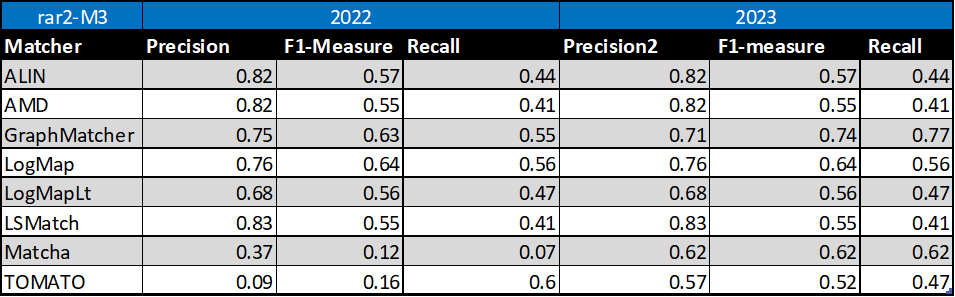
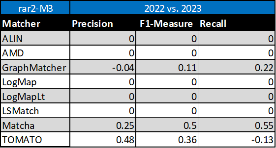
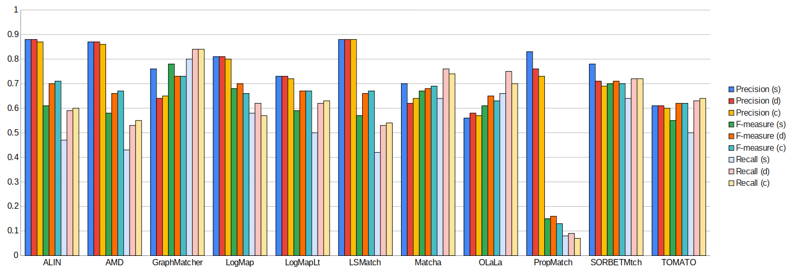
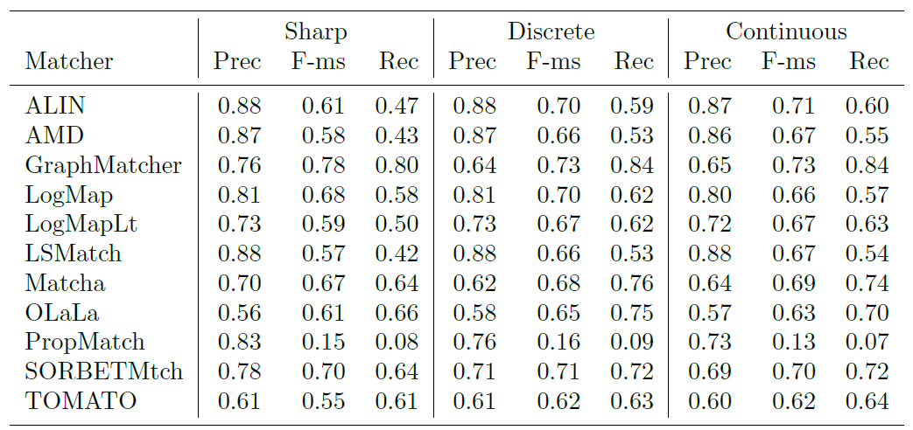

Web page content
This year, there were 11 participants (ALIN, AMD, GraphMatcher, LogMap, LogMapLt, LSMatch, Matcha, OLaLa, ProMatch, SORBETMtch, and TOMATO) that managed to generate meaningful output. These are the matchers that were submitted with the ability to run the Conference Track. OLaLa, ProMatch, and SORBETMtch are three new matchers participating in this year. LSMatch participated with older version (without property and instance matching) in comparsion with participation in other OAEI 2023 tracks.
Several systems use reference alignments to a certain extent (GraphMatcher /in its 5-fold cross-validation/ and TOMATO /in its sampling process/) for their model learning, as has happened with some ML-based systems in the past. It goes against the basic OAEI rule: "not using specific resources specifically designed to be adapted to the OAEI data sets." However, we leave it for a broader discussion (ideally, during the Ontology Matching workshop and based on a description of systems approaches) on how to cope with using reference alignments for (indirect/direct) learning in the next OAEI editions. We are considering preparing the ML version of the conference track.
You can download a subset of all alignments for which there is a reference alignment. In this case we provide alignments as generated by the MELT platform (afterwards we applied some tiny modifications which we explained below). Alignments are stored as it follows: SYSTEM-ontology1-ontology2.rdf.
Tools have been evaluated based on
We have three variants of crisp reference alignments (the confidence values for all matches are 1.0). They contain 21 alignments (test cases), which corresponds to the complete alignment space between 7 ontologies from the OntoFarm data set. This is a subset of all ontologies within this track (16) [4], see OntoFarm data set web page
Here, we only publish the results based on the main (blind) reference alignment (rar2-M3). This will also be used within the synthesis paper.
| Matcher | Threshold | Precision | F.5-measure | F1-measure | F2-measure | Recall |
|---|---|---|---|---|---|---|
| TOMATO | 0.0 | 0.57 | 0.55 | 0.52 | 0.49 | 0.47 |
| StringEquiv | 0.0 | 0.76 | 0.65 | 0.53 | 0.45 | 0.41 |
| Matcha | 0.0 | 0.62 | 0.62 | 0.62 | 0.62 | 0.62 |
| SORBETMtch | 0.0 | 0.73 | 0.7 | 0.66 | 0.63 | 0.61 |
| LogMapLt | 0.0 | 0.68 | 0.62 | 0.56 | 0.5 | 0.47 |
| LSMatch | 0.0 | 0.83 | 0.69 | 0.55 | 0.46 | 0.41 |
| OLaLa | 0.58 | 0.59 | 0.59 | 0.6 | 0.61 | 0.61 |
| AMD | 0.0 | 0.82 | 0.68 | 0.55 | 0.46 | 0.41 |
| ALIN | 0.0 | 0.82 | 0.7 | 0.57 | 0.48 | 0.44 |
| PropMatch | 0.0 | 0.86 | 0.29 | 0.15 | 0.1 | 0.08 |
| LogMap | 0.0 | 0.76 | 0.71 | 0.64 | 0.59 | 0.56 |
| edna | 0.0 | 0.74 | 0.66 | 0.56 | 0.49 | 0.45 |
| GraphMatcher | 0.0 | 0.71 | 0.72 | 0.74 | 0.76 | 0.77 |
For the crisp reference alignment evaluation you can see more details - for each reference alignment we provide three evaluation variants.
Regarding evaluation based on reference alignment, we first filtered out (from alignments generated using MELT platform) all instance-to-any_entity and owl:Thing-to-any_entity correspondences prior to computing Precision/Recall/F1-measure/F2-measure/F0.5-measure because they are not contained in the reference alignment. In order to compute average Precision and Recall over all those alignments, we used absolute scores (i.e. we computed precision and recall using absolute scores of TP, FP, and FN across all 21 test cases). This corresponds to micro average precision and recall. Therefore, the resulting numbers can slightly differ with those computed by the MELT platform as macro average precision and recall. Then, we computed F1-measure in a standard way. Finally, we found the highest average F1-measure with thresholding (if possible).
In order to provide some context for understanding matchers performance, we included two simple string-based matchers as baselines. StringEquiv (before it was called Baseline1) is a string matcher based on string equality applied on local names of entities which were lowercased before (this baseline was also used within anatomy track 2012) and edna (string editing distance matcher) was adopted from benchmark track (wrt. performance it is very similar to the previously used baseline2).
With regard to two baselines we can group tools according to matcher's position (above best edna baseline, above StringEquiv baseline, below StringEquiv baseline) sorted by F1-measure. Regarding tools position, all tools keep the same position in ra1-M3, ra2-M3 and rar2-M3. There are six matchers above edna baseline (GraphMatcher, SORBETMtch, LogMap, Matcha, ALIN, and OLaLa), three matchers above StringEquiv baseline (LogMapLt, AMD, and LSMatch), and two matchers below StringEquiv baseline (TOMATO, and PropMatch). Since rar2 is not only consistency violation free (as ra2) but also conservativity violation free, we consider the rar2 as main reference alignment for this year. It will also be used within the synthesis paper.
Based on the evaluation variants M1 and M2, four matchers (ALIN, AMD, LSMatch, and SORBETMtch) do not match properties at all. On the other side, PropMatch does not match classes at all, while it dominates in matching properties. Naturally, this has a negative effect on the overall tools performance within the M3 evaluation variant.
For the crisp reference alignment evaluation you can see more details - for each reference alignment we provide three evaluation variants.
Table below summarizes performance results of tools that participated in the last 2 years of OAEI Conference track with regard to reference alignment rar2.

Based on this evaluation, we can see that five of the matching tools (ALIN, AMD, LogMap, LogMapLt, LSMatch) did not change the results. GraphMatcher slightly decreased its precision but increased its F1-measure and recall. Similarly, TOMATO decreased its recall but increased its precision and F1-measure. Matcha increased all three, precision, F1-measure and recall.

The confidence values of all matches in the standard (sharp) reference alignments for the conference track are all 1.0. For the uncertain version of this track, the confidence value of a match has been set equal to the percentage of a group of people who agreed with the match in question (this uncertain version is based on reference alignment labeled ra1-M3). One key thing to note is that the group was only asked to validate matches that were already present in the existing reference alignments - so some matches had their confidence value reduced from 1.0 to a number near 0, but no new matches were added.
There are two ways that we can evaluate alignment systems according to these ‘uncertain’ reference alignments, which we refer to as discrete and continuous. The discrete evaluation considers any match in the reference alignment with a confidence value of 0.5 or greater to be fully correct and those with a confidence less than 0.5 to be fully incorrect. Similarly, an alignment system’s match is considered a ‘yes’ if the confidence value is greater than or equal to the system’s threshold and a ‘no’ otherwise. In essence, this is the same as the ‘sharp’ evaluation approach, except that some matches have been removed because less than half of the crowdsourcing group agreed with them. The continuous evaluation strategy penalizes an alignment system more if it misses a match on which most people agree than if it misses a more controversial match. For instance, if A = B with a confidence of 0.85 in the reference alignment and an alignment algorithm gives that match a confidence of 0.40, then that is counted as 0.85 * 0.40 = 0.34 of a true positive and 0.85 – 0.40 = 0.45 of a false negative.
Below is a graph showing the F-measure, precision, and recall of the different alignment systems when evaluated using the sharp (s), discrete uncertain (d) and continuous uncertain (c) metrics, along with a table containing the same information. The results from this year show that more systems are assigning nuanced confidence values to the matches they produce.


This year, out of the 11 alignment systems, 6 (ALIN, AMD, LogMapLt, LSMatch, SORBETMtch, TOMATO) use 1.0 as the confidence value for all matches they identify. The remaining 5 systems (GraphMatcher, LogMap, Matcha, OLaLa, PropMatch) have a wide variation of confidence values.
When comparing the performance of the matchers on uncertain reference alignments versus the sharp versions, it is evident that in the discrete cases, all matchers either performed at the same level as before or showed improvements in terms of F-measure. The changes in F-measure for discrete cases ranged from 1 to 16 percent above those in the sharp reference alignment. Notably, LSMatch exhibited the most significant performance surge at 16%, closely followed by ALIN at 15% and AMD at 14%. This substantial improvement was primarily driven by increased recall, a result of having fewer ’controversial’ matches in the uncertain version of the reference alignment.
In contrast, matchers with confidence values consistently set at 1.0 delivered very similar performance, regardless of whether a discrete or continuous evaluation methodology was applied. This was due to their proficiency in identifying matches with which experts had a high degree of agreement, while the matches they missed were typically the more contentious ones. Notably, Graph- Matcher stood out by producing the highest F-measure under both continuous (73%) and discrete (73%) evaluation methodologies. This indicates that the system’s confidence evaluation effectively reflects the consensus among experts in this task. However, it’s worth noting that GraphMatcher experienced relatively small drops in F-measure when transitioning from discrete to continuous evaluation, primarily due to a decrease in precision.
In addition to the above findings, eight systems that participated this year were also part of the previous year’s evaluation, allowing for some valuable comparisons over time. Among these, six systems demonstrated remarkable stability in their F-measures when assessed against uncertain reference alignments. However, two systems, Matcha and TOMATO, exhibited significant improvements this year. Matcha’s F-measure jumped from 12% in continuous and 14% in discrete last year to 63% in continuous and 65% in discrete this year, primarily due to an increase in precision. Similarly, TOMATO saw a substantial increase in F-measure from 15% last year to 62% this year, both in continuous and discrete evaluations. These improvements mark significant progress for these two systems compared to the previous year.
OLaLa, PropMatch, and SORBETMtch are three new systems participating this year. OLaLa has shown notable improvements in performance, with a 4% increase in the discrete case and a 2% increase in the continuous case concerning F-measure when compared to the sharp reference alignment. OLaLa’s F-measure has risen from 61% to 65% in the discrete case and to 63% in the continuous case. This improvement is primarily attributed to an increase in recall.
On the other hand, PropMatch and SORBETMtch have demonstrated similar performance in both discrete and continuous cases when compared to the sharp reference alignment in terms of F-measure. Notably, PropMatch exhibits consistently lower precision and recall across the three different versions of the reference alignment, primarily due to its narrow focus on property matching.
For evaluation based on logical reasoning we applied detection of conservativity and consistency principles violations [2, 3]. While consistency principle proposes that correspondences should not lead to unsatisfiable classes in the merged ontology, conservativity principle proposes that correspondences should not introduce new semantic relationships between concepts from one of input ontologies [2].
Table below summarizes statistics per matcher. There are number of alignments (#Incoh.Align.) that cause unsatisfiable TBox after ontologies merge, total number of all conservativity principle violations within all alignments (#TotConser.Viol.) and its average per one alignment (#AvgConser.Viol.), total number of all consistency principle violations (#TotConsist.Viol.) and its average per one alignment (#AvgConsist.Viol.).
Comparing to the last year the same number of tools (ALIN, LogMap, LSMatch and ProMatch) have no consistency principle violation while five tools have some consistency principle violations. Conservativity principle violations are made by all tools (except PropMatch which does not match classes). Seven tools (ALIN, LSMatch, AMD, LogMap, SORBETMtch, Matcha, and LogMapLt) have low numbers (less than 100). Three tools (GraphMatcher, OLaLa, and TOMATO) have more than 100 conservativity principle violations. However, we should note that these conservativity principle violations can be "false positives" since the entailment in the aligned ontology can be correct although it was not derivable in the single input ontologies.
| Matcher | #Align. | #Incoh.Align. | #TotConser.Viol. | #AvgConser.Viol. | #TotConsist.Viol. | #AvgConsist.Viol. |
|---|---|---|---|---|---|---|
| ALIN | 21 | 0 | 2 | 0.1 | 0 | 0 |
| AMD | 21 | 1 | 2 | 0.1 | 6 | 0.29 |
| GraphMatcher | 21 | 8 | 172 | 8.19 | 85 | 4.05 |
| LSMatch | 21 | 0 | 2 | 0.1 | 0 | 0 |
| LogMap | 21 | 0 | 21 | 1 | 0 | 0 |
| LogMapLt | 21 | 3 | 97 | 4.62 | 18 | 0.86 |
| Matcha | 20 | 7 | 90 | 4.74 | 81 | 4.26 |
| OLaLa | 21 | 11 | 199 | 10.47 | 184 | 9.68 |
| PropMatch | 21 | 0 | 0 | 0 | 0 | 0 |
| SORBETMtch | 21 | 7 | 43 | 2.15 | 73 | 3.65 |
| TOMATO | 21 | 13 | 361 | 17.19 | 203 | 9.67 |
Here we list ten most frequent unsatisfiable classes appeared after ontologies merge by any tool. Five tools generated incoherent alignments.
ekaw#Industrial_Session - 6 ekaw#Conference_Session - 6 sigkdd#Author_of_paper - 5 ekaw#Workshop_Session - 5 ekaw#Session - 5 ekaw#Regular_Session - 5 ekaw#Poster_Session - 5 ekaw#Poster_Paper - 5 ekaw#Demo_Session - 5 ekaw#Contributed_Talk - 5
Here we list ten most frequent unsatisfiable classes appeared after ontologies merge by ontology pairs. These unsatisfiable classes were appeared in all ontology pairs for given ontology:
ekaw#Contributed_Talk - 4 edas#Reviewer - 4 ekaw#Rejected_Paper - 3 ekaw#Invited_Speaker - 3 ekaw#Evaluated_Paper - 3 ekaw#Camera_Ready_Paper - 3 ekaw#Accepted_Paper - 3 conference#Invited_speaker - 3 cmt#PaperAbstract - 3 sigkdd#Author_of_paper_student - 2
Here we list ten most frequent caused new semantic relationships between concepts within input ontologies by any tool:
conference#Invited_speaker, http://conference#Conference_participant - 8 conference-ekaw iasted#Record_of_attendance, http://iasted#City - 7 edas-iasted iasted#Video_presentation, http://iasted#Item - 5 conference-iasted edas-iasted iasted#Sponzorship, http://iasted#Registration_fee - 5 iasted-sigkdd iasted#Sponzorship, http://iasted#Fee - 5 iasted-sigkdd iasted#Session_chair, http://iasted#Speaker - 5 iasted-sigkdd ekaw-iasted iasted#Presentation, http://iasted#Item - 5 conference-iasted edas-iasted iasted#PowerPoint_presentation, http://iasted#Item - 5 conference-iasted edas-iasted iasted#Hotel_fee, http://iasted#Registration_fee - 5 iasted-sigkdd iasted#Fee_for_extra_trip, http://iasted#Registration_fee - 5 iasted-sigkdd
[1] Michelle Cheatham, Pascal Hitzler: Conference v2.0: An Uncertain Version of the OAEI Conference Benchmark. International Semantic Web Conference (2) 2014: 33-48.
[2] Alessandro Solimando, Ernesto Jiménez-Ruiz, Giovanna Guerrini: Detecting and Correcting Conservativity Principle Violations in Ontology-to-Ontology Mappings. International Semantic Web Conference (2) 2014: 1-16.
[3] Alessandro Solimando, Ernesto Jiménez-Ruiz, Giovanna Guerrini: A Multi-strategy Approach for Detecting and Correcting Conservativity Principle Violations in Ontology Alignments. OWL: Experiences and Directions Workshop 2014 (OWLED 2014). 13-24.
[4] Ondřej Zamazal, Vojtěch Svátek. The Ten-Year OntoFarm and its Fertilization within the Onto-Sphere. Web Semantics: Science, Services and Agents on the World Wide Web, 43, 46-53. 2018.